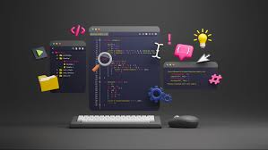
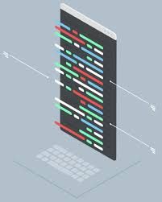

Desenvolvedor Full-Stack
Profissional com habilidades tanto em front-end quanto em back-end, responsável pelo desenvolvimento completo do software.

Engenheiro de Qualidade
Garante a qualidade do software por meio de testes e validação de funcionalidades.